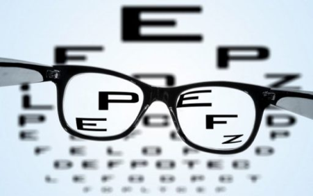

Ημερομηνία: 15 ΝΟΕΜΒΡΙΟΥ 2018
Έρευνα: Έως και 40% λιγότερο αστιγματισμό παρουσιάζουν όσοι γράφουν με greeklish
Συντάκτης:
Ένα εύρημα που έρχεται να ταράξει τον κόσμο της οφθαλμιατρικής παρουσιάζουν σε ολοκαίνουρια έρευνά τους οι επιστήμονες του διατμηματικού εργαστηρίου όρασης και πληκτρολόγησης του πανεπιστημίου της Βόννης.
Σύμφωνα πάντα με τους ίδιους, οι άνθρωποι που γράφουν ελληνικά με λατινικούς χαρακτήρες, παρουσιάζουν έως και 40% λιγότερο αστιγματισμό σε σχέση με όσους προτιμούν να γράφουν στα ελληνικά.

Το δείγμα του πειράματος αποτελούνταν από 3000 Έλληνες και Ελληνίδες με ηλικίες από 17 έως 62, οι μισοί μόνο από τους οποίους προτιμούν να γράφουν τα γραπτά τους μηνύματα στα ελληνικά. Σύμφωνα με τη διαδικασία του πειράματος, οι συμμετέχοντες κλήθηκαν να γράφουν με τους χαρακτήρες που προτιμούν και στη συνέχεια να κοιτάξουν από απόσταση δύο μέτρων μια φωτογραφία της Καίτης Ντιριντάουα. Προς έκπληξη των ερευνητών λοιπόν, οι συμμετέχοντες που προτιμούσαν τους ελληνικούς χαρακτήρες δεν γνώρισαν την πασίγνωστη ηθοποιό και τραγουδίστρια κατά 40% περισσότερο από τους άλλους συμμετέχοντες.
Τα αίτια του συγκεκριμένου ευρήματος παραμένουν αδιευκρίνιστα, αλλά οι επιστήμονες «εστιάζουν» την προσοχή τους σε δύο κυρίαρχες θεωρίες που ελπίζουν πως θα ρίξουν φως στα πρώτα αυτά πειραματικά αποτελέσματα. Πρώτη θεωρία που συγκεντρώνει την υποστήριξη των περισσότερων ειδικών είναι αυτή που μιλάει για τη σύνδεση των χαρακτήρων προτίμησης του καθενός με τη γλώσσα στην οποία λειτουργεί το κινητό τους τηλέφωνο, με όσους το έχουν στα αγγλικά να είναι περισσότερο πιθανοί καταναλωτές αγγλικού περιεχομένου, και άρα περισσότερο ανοιχτόμυαλοι, και άρα περισσότερο πιθανοί να έχουν αναπτύξει νευρώνες που να μπορούν να αντιστρέψουν τα οποία μειονεκτήματα μπορούν να παρουσιάζουν στη όρασή τους.
Στον αντίποδα βρίσκονται οι επιστήμονες οι οποίοι υποστηρίζουν πως η πρώτη θεωρία περιέχει παρά πολλά λογικά άλματα, αλλά και πώς η ελληνική γλώσσα είναι η πιο πλούσια. Το «Κουλούρι» παρακολουθεί με ενδιαφέρον τις μελέτες και θα επανέλθει για οτιδήποτε νεότερο.
http://www.tokoulouri.com/science/astigmatism/
Πηγή: www.newsnowgr.com/